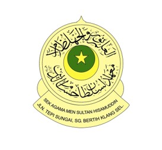

📘 MY EDUCATION JOURNEY
📚 Positions I have held throughout my career:
- Class Representive (2012, 2013, 2016, 2017, 2018, 2020, 2023, 2024, 2025)
- Prefect (2014, 2015, 2016)
- Computer Lab's Prefect (2016, 2017)
- Librarian (2021, 2022)
- President of Badminton's Club (2022)
- Committee member of Kadet Remaja Sekolah's Club and Science, Technology, Education and Mathematics, STEM Club (2019, 2020)
- Editorial and Multimedia Staff Club (2019, 2020, 2021, 2022)
🏆Academic Achievement
- Smart Educare Programme - Excellent, Highest Ranking (2011)
- Pentaksiran Berdasarkan Sekolah Mithali in Bahasa Melayu (2012, 2013)
- Academic Excellence Award - 9th place (2014)
- Excellent Subject Learner - Reka Bentuk Teknologi (2015)
- Excellent Subject Learner - Pendidikan Islam (2016)
- Academic Excellence Award - 10th place (2016)
- UPSR Award - 3A 3B (2017)
- PSRA Award - Mumtaz (2017)
- Common European Framework of References for Language - B1 level (2022)
- Kelas Kemahiran Quran Award - Mumtaz (2023)
- SMA Award - Jayyid (2021)
- SPM Award - 3A 1A- 1B+ 4B 1D (2022)
Primary School – Sekolah Kebangsaan Telok Pulai (SKTP)
2012 – 2017

Secondary School – Sekolah Agama Menengah Sultan Hisamuddin Sungai Bertih (SAMSHSB)
2018 – 2022

🆠Certifications
- Leadership Intergrity Program (2014, 2015, 2017)
- Rhythmic Oratory Competition Champion Klang State - 4th place (2015)
- The Champion & Muqayyam Al-Imtiyaaz (2017)
- Kemahiran Amal Islami, Tilawah Al-Quran dan Hafazan, Klang State - 3rd place (2017)
- Science and Mathematics Explorance (2018)
- Kemahiran Amal Islami, Khat, Klang State - 3rd place (2019)
- Kemahiran Amal Islami, Syarahan Bahasa Arab, Klang State - 1st place (2020)
- Kemahiran Amal Islami, Syarahan Bahasa Arab, Selangor State - 4th place (2021)
- Badminton School Tournament - 4th place (2021)
- Pingpong School Tournament - 3rd place (2022)
“Education is not an affair of 'telling' and being told, but an active and constructive process. The school must represent present life, as real and vital to the child as that which he carries on in the home, in the neighborhood, or on the playground.”
-John Dewey, 20th Century Educational Reformer
"Education breeds confidence. Confidence breeds hope. Hope breeds peace. By nature, men are nearly alike; by practice, they get to be wide apart. Learning without thought is labor lost; thought without learning is perilous."
-Conficius, Ancient Philosopher